Equal parts coder, athlete, and dreamer 🌈. I believe growth happens when you step outside your comfort zone on the court, in code, and in life.
I am always chasing progress, not perfection 🌱
✦ final year · BTech ✦
A final-year BTech undergraduate, basketball player 🏀 (ex-captain of the girls team), tech enthusiast 💻 and someone who lives for outdoor adventures. I love balancing discipline from sports with creativity in tech.
I build with heart, hustle, and a lot of joyful debugging ✨
psst... the stickers are draggable. go on, move them!
the short version
Equal parts coder, athlete, and dreamer 🌈. I believe growth happens when you step outside your comfort zone on the court, in code, and in life.
I am always chasing progress, not perfection 🌱
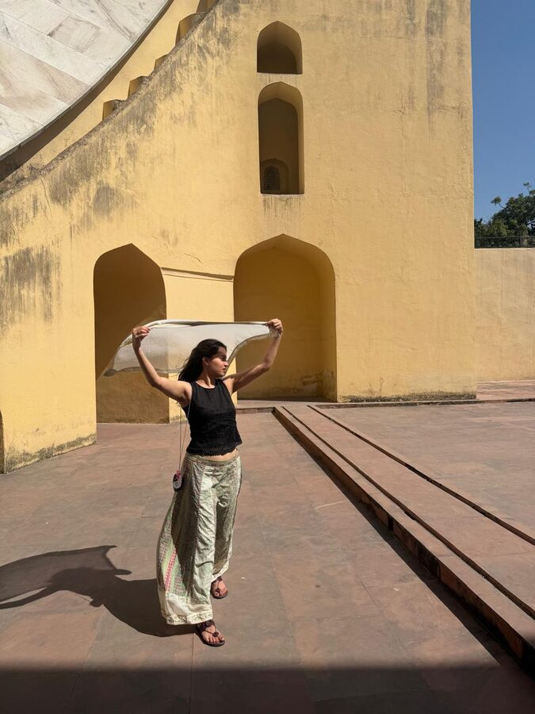
three things I never skip
There is always a book half-finished somewhere near me. A few I would hand to anyone:
more spines on the way 📦
Played for the girls team all through college and captained it in my 2nd and 3rd year. The badge is retired, the game is not.
Treks, snow, sunrises I set alarms for. If the trail is long and the signal is gone, I am having a great time.
my actual desk, screenshotted mid-chaos
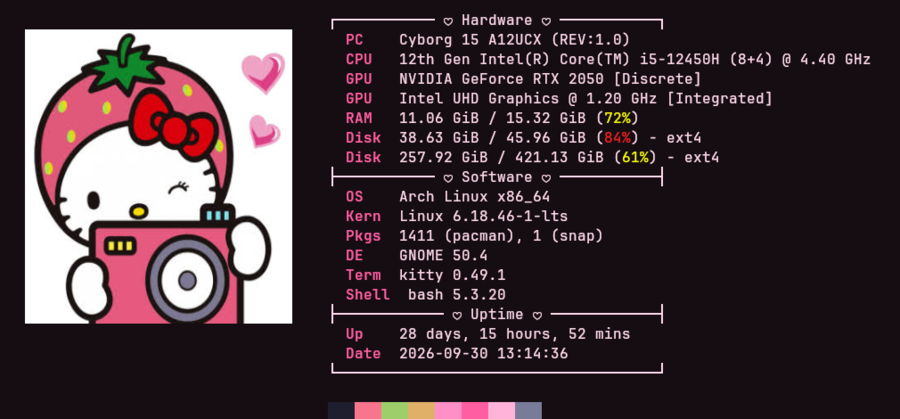
yes, it is Arch. yes, I will tell you about it. 🍓
school → college → real work
Where I studied, where I have interned, and what each stop taught me.
2023 – 2027
B.Tech in Computer Science and Engineering (Data Science)
CGPA 8.5
Class 12
Physics, Chemistry, Maths and Biology, because choosing was never my thing.
Score 93%
Class 10
The first time I learned that discipline compounds.
Score 95%
grades are the boring part. scroll for the fun part ↓
Product Engineering Intern
Freelance Developer
Research Work · IST Computing
Data Analytics Intern
Business Development Intern
peel-off sticker sheet
Everything here shows up in at least one project below.
straight from my GitHub
Filter by topic, search for a tool, or open the details on any window.
A small production-like system you can break on purpose, plus an AI agent that investigates the alerts with read-only MCP tools and writes an incident report backed by evidence.
An order API (FastAPI + Postgres) sends traces, metrics and logs through OpenTelemetry to Prometheus, Loki and Tempo. Alertmanager hands alerts to an incident worker, which runs a Claude agent over narrow MCP tools for error rate, latency, logs, traces, database health and deploy history. Everything runs locally with Docker Compose, with Grafana dashboards included.
A document assistant built in four phases: a core RAG pipeline first, then async ingestion, guardrails, caching, evaluation, and cost and latency tracking.
A Streamlit app over a RAG pipeline: PDF ingestion and chunking, OpenAI embeddings, Pinecone vector search and gpt-4o-mini answers. Later phases add Celery + Redis background ingestion, input and output guardrails, caching, RAGAS evaluation runs, and a tracker that logs LLM calls and retrievals. This repository is the final phase; the earlier phases live in my RAG, Phase-2 and Phase-3 repositories.
Live e-commerce transactions flow through Kafka into a Python stream processor that flags suspicious orders and scores anomalies, then lands them in Redis, PostgreSQL and Grafana.
A Faker-based producer publishes transactions to Kafka. The stream processor enriches them, flags transactions over $500, and scores each one with an Isolation Forest model trained on the first 50 transactions. Redis holds the real-time cache, PostgreSQL the permanent storage, and Grafana the dashboards. Deployed on AWS EC2 with Docker Compose.
Classifies chest X-rays as healthy or pneumonia and shows why the model decided that, using Grad-CAM heatmaps and SHAP.
A pretrained CNN fine-tuned on chest X-ray images, with a Streamlit app: upload an X-ray and get a prediction together with Grad-CAM and SHAP explanations of the regions that influenced it. This is a learning project, not a diagnostic tool.
A from-scratch x86 bootloader and tiny kernel, built to understand how a computer gets from power-on to running its first code.
A BIOS boot sector written in NASM assembly loads a small kernel into memory and jumps to it, and the kernel prints to the screen. Built on Arch Linux and tested in QEMU. It is minimal and educational: the focus is the boot sequence, memory layout and kernel hand-off.
Checks from a phone photo whether a polarized PCB component is placed the right way round: fixture alignment, component crop, classifier, then PASS, CHECK or FAIL.
OpenCV ArUco markers flatten and align each photo, blur and exposure gates reject bad shots, and a fine-tuned ResNet18 classifies the cropped component. Whole boards stay in a single data split and thresholds are chosen on validation only. This is phase 1: the reports in the repository so far come from synthetic rehearsal boards and are labelled that way.
A batch pipeline where Airflow ingests daily stock data into PostgreSQL and dbt turns it into moving averages, returns, volatility and trend signals.
Airflow orchestrates three steps: ingest daily OHLCV data for 10 tickers from the Alpha Vantage API, run the dbt models, then run the dbt tests. The models go from staging to intermediate metrics to a final performance table. Containerized with Docker Compose, with Terraform files and a CI workflow in the repository.
A streaming pipeline with Apache Kafka on AWS EC2: producers push stock market records, consumers store them in S3, and Athena queries them.
Kafka and Zookeeper run on an EC2 instance. A Python producer streams rows from a stock market dataset to a topic, a consumer writes them to Amazon S3, an AWS Glue crawler catalogs the data, and Amazon Athena runs SQL over it. The README has screenshots of each stage.
An OMNeT++ simulation of an IoT, edge, mist, fog and cloud network with a central controller that switches threat modes for DDoS, SQL injection and man-in-the-middle attacks.
The C++ simulation models each network layer and a controller that reads edge reports and broadcasts the current threat mode. A Python script trains a Random Forest classifier on the CIC-IDS2017 dataset and derives per-attack threshold profiles for the simulated controller.
A workshop-series app about making an AI support assistant fast and cheap without making it wrong, starting with exact and semantic caching.
The first two of five sessions are built: a multi-layer exact cache (in-process memory, then Redis) and a semantic cache with extra safety gates. On the repository's 600-request benchmark, cost per 1,000 requests drops from $10.58 to $4.86 at a 54% cache hit rate.
Upload a PCB bill of materials and one click runs the whole quote: live component pricing, an SMT feasibility check, cost calculation, and PDF and Excel exports.
A Flask app that detects the BOM columns automatically, looks up live DigiKey pricing per component, rates SMT risk per package, calculates costs with margin, exports PDF and Excel quotations, and uses Groq for an AI email draft and component explanations.
A web app that turns a PCB bill of materials into a PDF or Excel quotation, with cost calculation, margin, VAT and mismatch checking.
The FastAPI backend parses .xlsx, .xls and .csv BOMs, detects SMT and THT components, checks that reference counts match declared quantities, and calculates assembly costs. The React + Vite frontend shows the parsed table, editable cost settings and a live quote preview. PDFs are generated with ReportLab.
An LSTM predicts daily order counts on the Olist e-commerce dataset and flags the days that stray too far from the prediction as anomalies.
Orders are aggregated per day along with delivery and approval delays. A PyTorch LSTM predicts the next day from a 14-day window, days with unusually large residuals are marked as anomalies, and a Streamlit + Plotly dashboard shows actual orders, predictions and the flagged days.
A website for a Greek and Indian fusion kitchen, with a menu, courtyard and events sections, and a candlelit mode toggle.
A static site in plain HTML, CSS and JavaScript with sections for the story, the courtyard, the menu, upcoming events and visiting, plus a candlelit (dark) theme toggle. It is live on GitHub Pages.
Generates sample user event data, stores it in MongoDB, and explores it with Pandas to look at engagement patterns.
Python scripts create a sample events file (page views and clicks by device and country), insert it into MongoDB, and load it back into Pandas for analysis. It is an early-stage project that I am still building out.
A basic CI/CD pipeline where Jenkins, running in Docker, checks out the repository, sets up Python and runs the pytest suite.
The pipeline is defined in a Jenkinsfile and fails when the tests fail. The README also documents the problems I hit along the way, such as dependency installs and environment issues inside Docker. The goal was learning Jenkins and CI/CD basics, not application complexity.
Functional API tests for an online banking system using Postman and the Newman CLI, run against a mock API server.
A software testing course project covering authentication, fund transfer, account management and transaction history. The test cases use boundary value analysis, equivalence partitioning, decision tables and state transitions, and Newman automates the runs and generates HTML reports.
No projects match that search just yet. Try another word? 🌸
the people part
Four years at Bennett and the people who made them worth it.
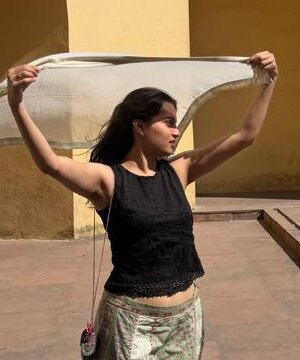
campus is where the "athlete" and the "coder" stopped being separate people.
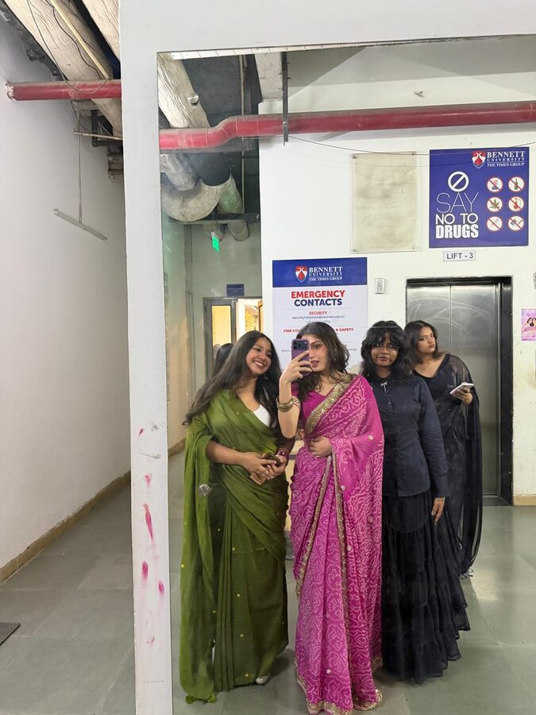
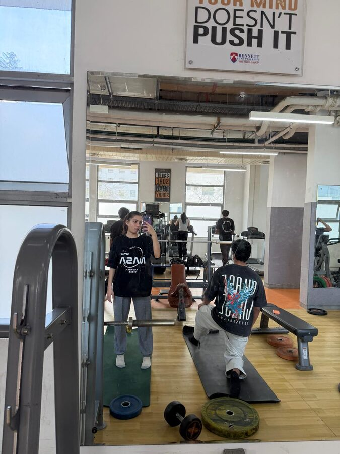
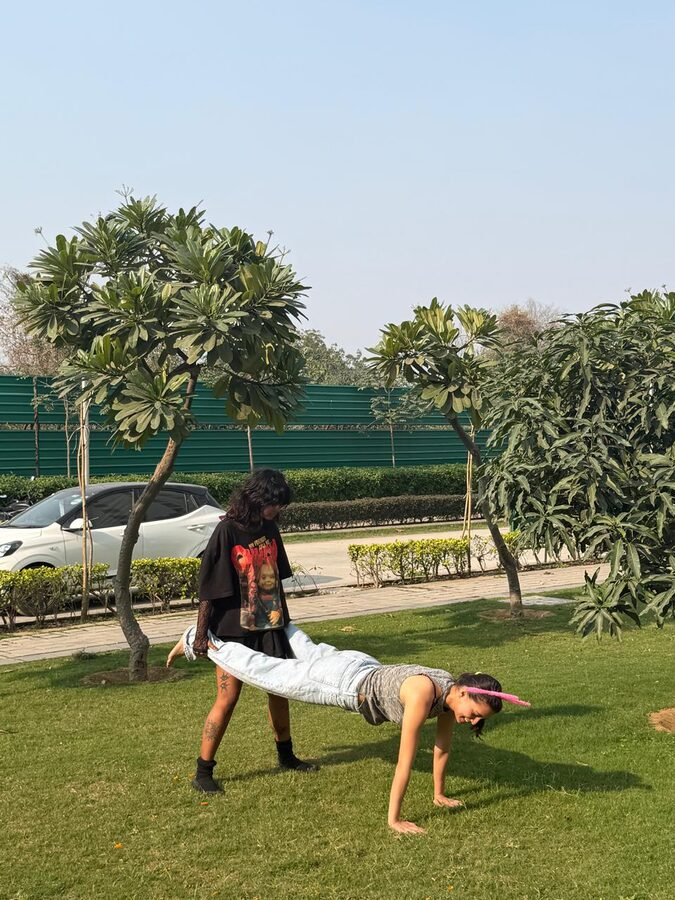
found my people in week one. still stuck with them 🫶
mandatory, non-negotiable
Every portfolio needs a cat. Mine is Churros. She sits on the keyboard while I type, so technically every project is a collaboration.
the evidence
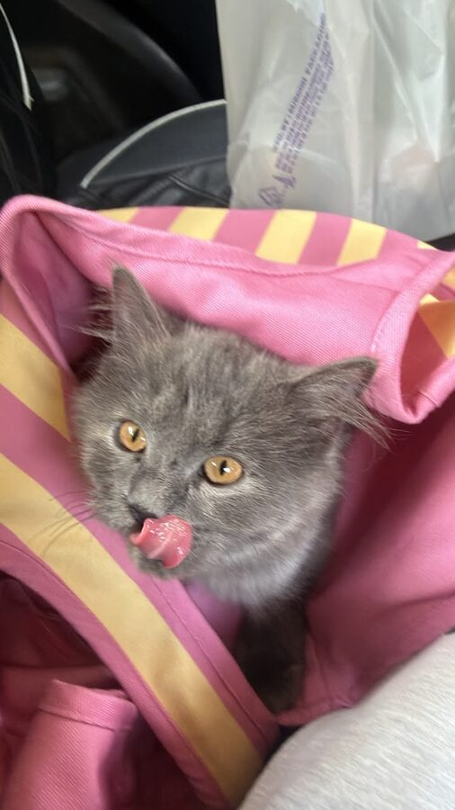
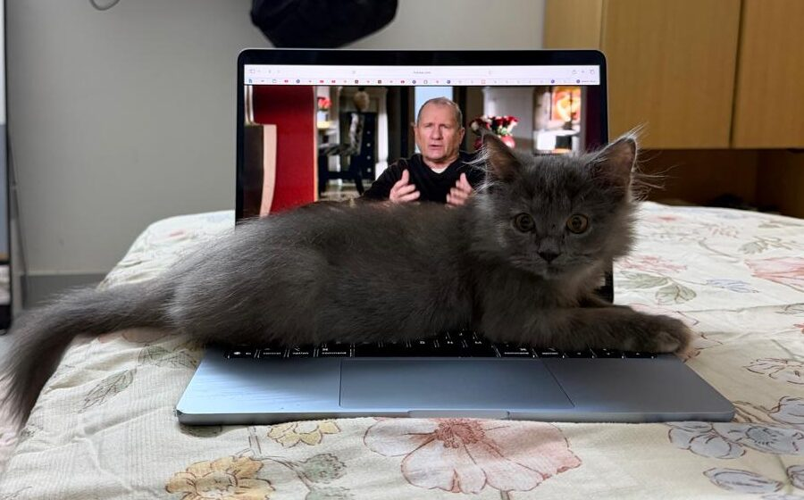
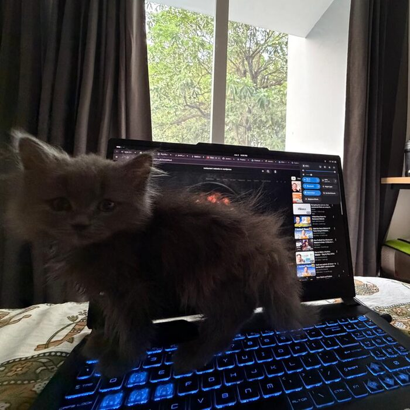
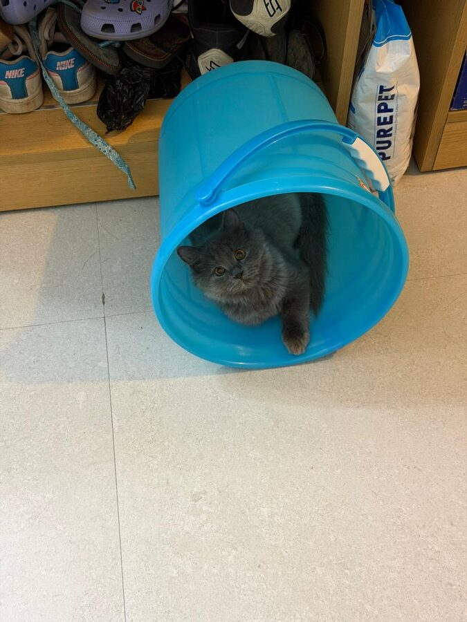
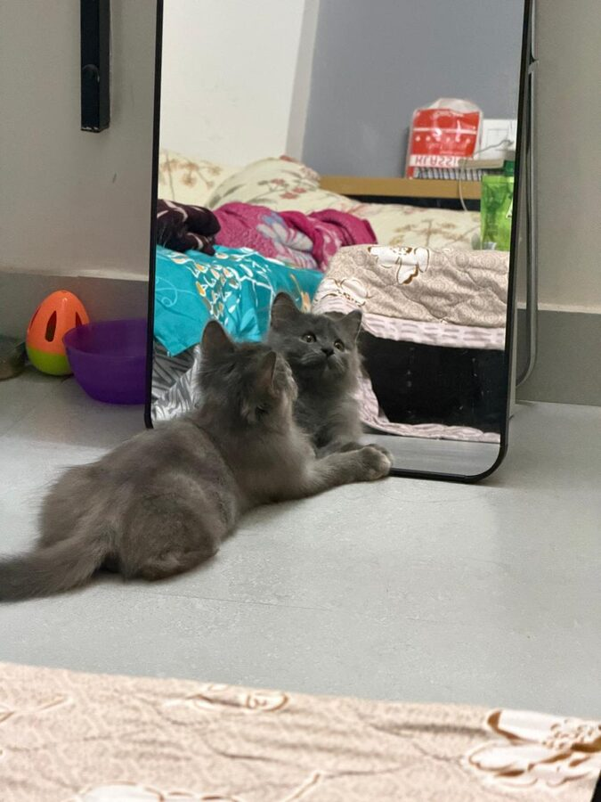
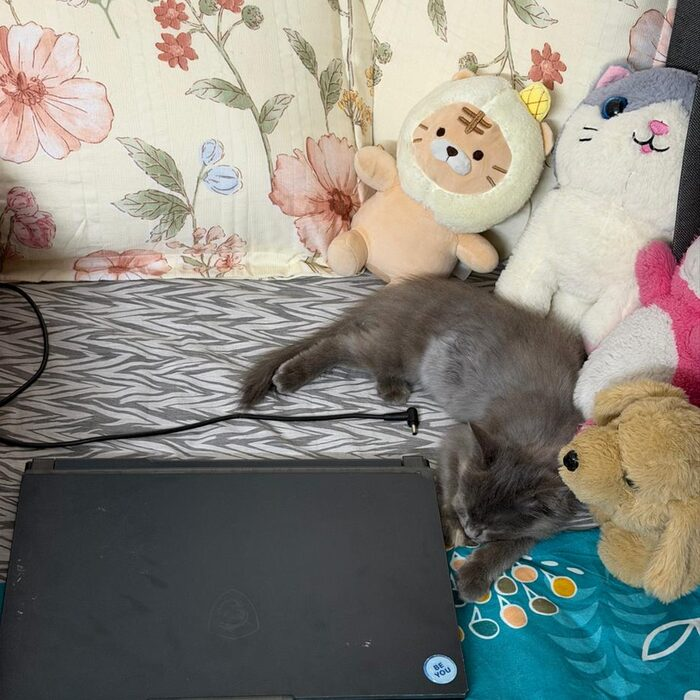
break time, you earned it
Bubble Pop is already running. Pop as many as you can before they fade, grab a meme, then leave a doodle.
Tap the bubbles before they fade ✨
beat my best? screenshot it and send it to me 😤
draw me something!
Thanks for stopping by 🫶 This site is a tiny reflection of my journey: learning loudly, dreaming boldly, and enjoying the ride. If you are here to collaborate, connect, or just vibe, welcome 🌸
come say hi
bye for now, go pet a cat 🐾